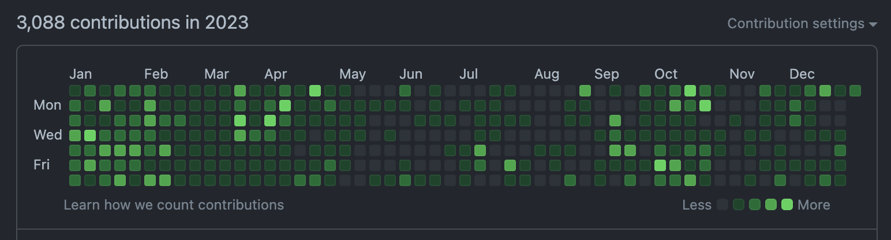
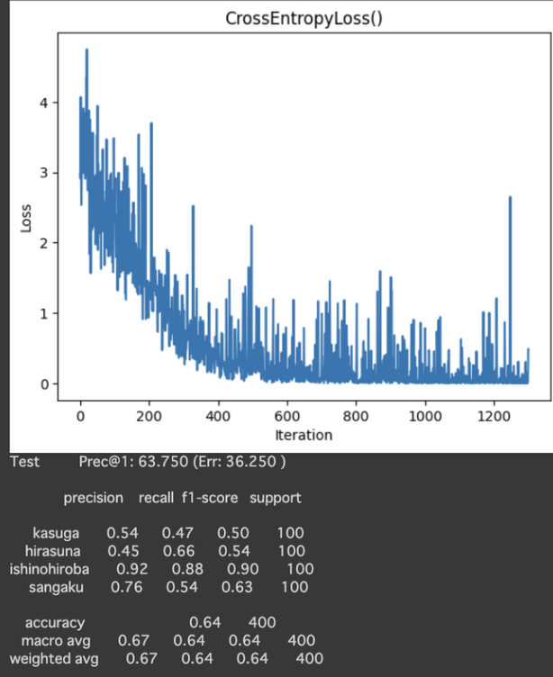

2023年
こんにちは。2023年をふりかえります。
2022年 ふりかえり
2021年 ふりかえり
2020年 ふりかえり
GitHub
2023年のcontributions数は3088だった。去年よりも1000くらい増えた。大学のレポートや日報が含まれているので純粋な開発よりは多くカウントされていると思うが、去年よりもコンカタ活動に積極的だったのは間違いない。
今年は去年と比べて期末試験など忙しいタイミングが多くモチベーションがまばらだったので、来年は継続的にパソコンについて考えたいなと思う。
学類新歓
去年の12月から今年の4月ごろにかけて、情報科学類の新歓委員をしていた。
委員自体は1年生の4〜5月に決まるのでもうなんで委員になったのかはよく覚えていないが、パンフレットの印刷が学生主体で行われているという話がパンフ後記に書いてあったのを見たことから興味が出たのかなと思う。同期のuekannが委員長で、僕は会計だった。
新歓パンフレットの組版言語としてのSATySFiの利用に興味があると友人のpuripuri2100に話したところ、質問などがあれば聞いてくれて大丈夫と言ってもらえたので使ってみることにした。去年の大晦日やお正月周辺は先代・先々代の引き継ぎデータのGitHub Actionsのワークフローを読み解いたり、The SATySFibookを読んで勉強していた記憶がある。
この辺の話についてはSATySFi conf 2023で話した。スライドはここにあります。
バタバタし続けていたが、結果的に素敵なパンフレットが完成し、新歓当日もある程度役割は果たせたので良かった。
インタプリタの実装
2月に履修したソフトウェアサイエンス特別講義Aのレポートで、Nimを使ってインタプリタを実装した。Brackなどの雑なオレオレアルゴリズムのパーサは書いたことがあったが、一通り勉強して（以前よりは）全体を見通せた実装になったと思う。
https://github.com/momeemt/minim
fusionを採用してOption型へのパターンマッチを軸にした実装にした。これを書いたことでよりNimへのこれじゃない感が増してしまい使用頻度が減っていった。そういうこともある。
学内エリアの多クラス分類
夏頃に深層学習に興味が出て、学内エリアの多クラス分類をやっていた。
PyTorchで簡単にResNetを実装して、Google Streetview APIで学内画像を収集して学習させた。また、ViTにも興味が出てVision Transformer入門を読んで軽く実装したりもした。
画像は学習途中の結果で精度が半分程度しかないが、最終的には8割くらいまで上がったと思う。深層学習の基本的な知識を身につけられて楽しかった。情報系で生きていくのにいよいよ機械学習を逃れることが出来なくなってきていそうなので、来年も時間を作りたい。ゼロから本を積んでばかりなのでその解消からかな...
インフラ
今年はインフラに興味が向いた1年だった。Terraformを書くのがかなり楽しく、他にもシェルスクリプトやGitHub Actions、Nix、Portainerなどのコンテナ関連技術、さくらのクラウドなどをよく触った。
自宅で眠らせていたパソコンにはNixOSを入れてみたが設定はあまり捗っていない。libvirtを使ってUbuntu VMを建ててみたので、計算能力の高いサーバが得られたら自宅Kubernetesクラスタを組みたい。友人からISUCONに誘われたので来年に向けて知っておきたいことがまだまだたくさんある。
授業ハッカソン
情報メディア創成特別講義Bを履修した。これは夏休みに1週間ハッカソンをして発表すると1単位が貰える太っ腹な授業で、友人らと3人でチームを組んだ。うち2人はフロントエンドやデザインに強く、じゃあまあ僕はバックエンドとインフラで〜みたいなふんわりとした分担をした。
大学からAzureの無料枠を割り当ててもらえているので、それをデプロイ先にして初日はTerraformを書いて2日目以降はGoの小さなWebサーバを書くという立ち回りをしていた。
技術構成はこの画像の通り。
Goをビルドする選択肢は複数あり、今回はNivとgomod2nixを使った。実はFlakesでも固められるのだが当時はflake-compatの存在を知らず、Nix Environment SelectorがFlakesに対応していないので使わなかった。
自動デプロイの動作を確認してフロントエンドの進捗を確認すると、そちらが完璧な状態になっていて感動した。繋ぎ込みを容易にするためにOpenAPI Docsを吐いていたが、ドキュメントの更新をサボった結果、全然意味を為さなくなっていた[1]。ごめん。OpenAPI Generatorを使っておくべきだったかも。それはそれとして時代はGraphQLですよ！と言ってくる頼もしい椎名くんの声は全て無視していた。
Neovimとdotfiles、Nix
今年はNixに強く惹かれた1年間だった。パソコンを買い替えたタイミングでHomebrewを使うのをやめ、ほぼすべてのソフトウェアをグローバルインストールしなくなった。かなり快適だ。
夏頃から徐々にだがdotfilesを設定し始めた。こちらもhome-manager、およびnix-darwin、各種CLIツールへの解像度がまだまだ低く十分に設定することはできていないが、来年1年間で不満なく使えるようにしたいなとは思っている。アドベントカレンダーをやっていたがテストが忙しすぎて無理だった。1月にちょっとずつ回収していきたいです。
NeovimとVSCodeを併用して使っている。なるべく前者を使うようにしているが、home-managerでインストールしたNeovimとrust-analyzerの相性が悪いのか標準ライブラリの補完が効かない状態なのでRustを使った開発は基本的にVSCodeでやっている。こちらも移行して完全にNeovimのみで完結できるようにしたい...
Brack
Brackはプラグインシステムを備えていて、Nimのマクロと密に結合しているのでコンパイル時にプラグインコードの整合性が保証できる。しかしこれは特に嬉しいわけではなく、時間を空けると意図を読めなくなるマクロと戦い続ける辛さが上回ってしまった。
友人がWebAssemblyにコンパイルできる拡張Markdownパーサ、ALMOを実装していたのを見て、Wasmをプラグインシステムとして取り込んだらかなり面白いのでは...？と11月頃に思い、年末に駆け込みで実装していた。現在この行を執筆しているのは31日 23:58で全く間に合いそうにないが、ふりかえりをサボって実装していたからこんなことになっている。計画性が驚くほどない。
その甲斐もあってか、extismのパワーもあってか現状のBrackが備える言語機能とほぼ同等のものをRustで実装し直すことができた。この記事はNimで実装したBrackで解釈しているが、3年生に進級するまでには差し替えたい。
成果物
19年はMifton、20年はPiledit、21年はmock up、22年はBrack、と質はさておき毎年何かを開発して公開していたが、今年は公開できる成果物は特になかった。焦らずに1つのソフトウェアをじっくり作りたいとは常々思ってはいて、部分的にはその結果でもあるが、実際には学実委に意識が引っ張られすぎていたなと思う。
時間の使い方を間違えたなとかなり後悔している。学実委は進路とか勉強など本来考えなければいけないことの良い逃げ道になっていただけだった。
無計画になんとなく面白そうでも責任が伴う場所に所属するのはやめようと思う。内向的で偏屈な自分の性格も相まって、何らかのコミュニティに属することによるメリットがデメリットを上回らないことが多い。服薬を始めたことで多少マシになったということもあるが、人間関係を持たなくて良くなったことで一気に日常生活のストレスが減った。ただ頭に靄が掛かったような状態は変わらなくて、自分の感情や考えを上手く言葉にできないことが顕著に増えている。元々あまり得意ではなかったという自覚はあるけど、秋頃から特に酷い。
大学は4年間もあるのでそういう1年があっても仕方ない。来年はもう少し時間の使い方を絞って研究に時間を充てたい。実装難度が高めのテーマに設定してしまったこともあり毎週成果が出ず、研究向いてないのかなと落ち込むことも頻繁にあったが、指導教員の先生にフルタイムで研究するところがスタートラインで、今勉強している専門の基礎知識は役に立つのだから焦る必要はない、という趣旨の助言をいただいてかなり救われた。来年は（今ならふらっと興味のある技術をやってしまう）時間の使い道のファーストチョイスを研究にすることが目標。あと動画を見てしまう時間って最も意味がなくて、本当に無くしたい、、ので、それを言語処理系を触る時間に上手く変えられたらいい人生になりそうだな〜と思う。最近は丸くなったので趣味は大切派と計算機を触る時間以外は無駄派が同居していて、今年は前者が優勢だったので来年は後者にも期待がかかる。
技術
成果物がなかった一方で、今年は新しい技術に多く触れた。
先述の通りHome Managerとnix-darwinを組み合わせることでdotfilesをNixで管理することができ、これも面白く感じていたが、非Nix環境でdotfilesを使えないのがやや微妙に感じている。サブセットをAnsibleで作って管理するか、事前にビルドすることでNixに依存しないdotfilesを生成できたら面白いなと思っているが、あまり勉強に本腰を入れていたわけではなく何となく楽しんで使っていた程度なので解像度が低くて手が動いていない。
Terraformは面白かった。友人はライセンス変更に機敏に反応していて、OpenTofuへの移行を主張していた。その時は聞き流していたが、確かにTerraform側では放置されていたバグや新機能の取り込みが積極的に行われそうな雰囲気も感じていて、たまにOpenTofuのIssuesを眺めたりしている。
SATySFiもよく書いた。基本的にeasytableやfigboxなどのパッケージの使い方を覚えつつ目的のPDFをビルドする、という使い方に留まっていたが、puripuri2100から多段組とstdjabookの実装について教えてもらったのでなんとなくプログラム側も読めるようにはなってきている。レポートだけでなく論文執筆、特にプログラミング言語によるスライド作成には以前から興味が強かったので、Slidfyを使ったスライド作成にも使えるようにしたいなと思っている。
他にもシステムプログラムの文脈におけるC、Go、OCaml、Arduino、Zsh、PyTorchなどの解像度は上がった。大学の授業から学ぶことは多くあった。
あと去年やらなかったことで言うと、Next.js、SATySFi、GitHub Actions、Dockerなどは今年勉強したり書けるようになったりした。来年はUnity、AfterEffects、Blender、k8s、Rust、Zig、Haskell、Nixを勉強したい。
22年の振り返りを見るとAfterEffects、Blenderに興味を出していて、ここら辺もできるようになると素敵だとは思うがあまり優先度は高くない。Unityは研究でたまに使ったりはしていたが解像度は全然低いまま。
Rustはあまり書けず、目的のプログラムを調べながら実装することはできるがNimのように疑問なく使えるようになるにはまだまだ時間が掛かると思う。ライフタイム管理や非同期処理などは難しくてよく分かっていない。
Zigは触りだけ。Scrapboxのページ数カウンタを実装するのに使っていたがその後放置している...。UnixコマンドをZigで再実装してみたいなあとはずっと思っていて、来年のアドベントカレンダーとかで出来たらアツいな...
Haskellは正規表現を実装するのに少し書いていたが、こちらも触りだけ。Nixは1年を通してよく書いていたと思う。
ちょっと去年は広範囲に興味を出しすぎていたので、2024年は勉強したい新しい技術は3つくらいに絞っておきたい。RustとWeb Assembly、Kubernetesで。技術は就職後でもできるけど、研究は今しかできないかもという気持ちはずっとあって、なるべく時間をそちらに使いたい。
買ったもの
一人暮らしも2年目に突入したが、相変わらず外に出られないのでAmazonが注文の中心になっている。注文履歴曰く、99件の注文を行なっている様。良い注文が多かった。
- バブ（1月）
- MacBook Pro（1月）
- カーペット（2月）
- 段ボールラック（3月）
- Synology NAS（4月）
- 宅配ボックス（7月）
- XREAL Air（7月）
- アイロン（7月）
- モニター（8月）
- HHKB Professional HYBRID Type-S 無刻印/雪（11月）
- TP-Link 8ポート スイッチングハブ（11月）
全然ポートが足りなくなったのでスイッチングハブを買った。一瞬で8ポートは埋まってしまったので2つ目も買った。
43インチモニタを買ったが、これは今年買ったものの中で1番良かったと思う。何より広い。22インチくらいのサブモニタを持っていて大きさには不満がなかったが、古いので画質が荒くコーディングするのもギリギリだった。今回は4Kモニタを買ったので、全ての作業が快適に進んでいる。開発体験が上がったし、自宅での作業が進むようになってますます家から外に出られなくなった。買ったタイミングでWMをyabaiに変更してキーを割り当てたのでより効率的になったと思う。
HHKBはずっと気になっていたが一生物だろうと思い意を決した。すぐ分かったこととしては打ち心地が明らかによく、タイピングが楽しい。長期的に手放せなくなる類のキーボードだと思うので、徐々に慣れていきたいなと思う。無刻印があまりに素敵なので悩まず買ったが、数字キーや記号キーは時折間違えてしまうのでパソコンをやり始めてかれこれ丸5年にはなるけど使いこなせていないんだなという事を自覚的になれて良かった。来年末までには全ての仕事がキーボードのみで完結できるほど習熟している事を目指したい。とりあえず年末からVimimを入れてみた。
大学
今年は特にしんどかった。1年次に履修した授業よりも1つ1つが重くなった上、今年は52単位履修していた。死ぬかと思った。教職取っている人のタフさを思い知った。
数えたら秋ABは週に23コマあった。高校の時間割みたいだ。
春は、行ける時に図書館に行ってダメな時には布団で泣くみたいな生活だったので、来年は短期的に集中して頑張ることを目標にしていけたらなと思う。ただ1年生の頃は期末試験の勉強をした記憶がまるでないのでそれに比べたら進歩だった。
特に面白かった授業
- メディアアート・フィジカルコンピューティング
- 論理システム演習
- オートマトンと形式言語
面白かった授業
- 情報可視化
- コンピュータグラフィックス基礎
- 情報メディア創成特別講義B
来年はもっと純粋に興味ベースで授業を取れたら良いなと思う。
資格
前述したコンピュータグラフィックス基礎で紹介されたCGエンジニア検定のエキスパートを取った。
友人と二週間前くらいからかなり勉強しており、前日に過去問演習をしたら9ミス前後（77点くらい？）を取り続けていたので下振れたら死ぬな...と思っていたが、結果的には4ミスで上振れて合格できたので良かった。
合格できたこともそうだが、CGはとても面白く意欲的な面での収穫がかなり大きかった。
一定の勉強をして資格を取る、ということはこれまでにも何度かやってきたが、資格を起点に興味を広げられたことが少なかったので成功して嬉しい。
言及
基本的にしない方が良い。インターネットに文章を載せる行為そのものに忌避感が出てきているが、文章を書きたい欲にあまり抗えていない。しずかなインターネットのコンセプトにはとても共感できた。
前にCloudflare Zero Trustによる認証がすこし話題になっていたが、きちんと社会的な線引きをした上で発言ができるようになるまでこのブログも限定公開にしても良い気がした。
気持ち
今年は一年間を通して精神的に安定しなかった。秋ごろに診断を受けて抗うつ薬と睡眠薬を飲み始めた。
初めての服薬で不安も大きかったのでプラシーボ的な上乗せはあるかもしれないが、効果はある程度感じている。現代科学は全然科学で精神状態を治してくるんだな、すごいな、と思った。秋頃は二大季節の変わり目ということで精神状態が最悪で、実装だけでなく授業や課題、家事などあらゆることが出来ていなかったのである程度軽減されて本当に良かったなと思う。希死念慮も薄れつつあるし、眠れるようになったので完璧ではないが生活も上手く回っている。
睡眠薬の副作用でよく夢を見るようになったが、放射能によって巨大化した動物が暴れる映画の広告をテレビで眺める夢などを見ている。悪夢もたまに見るが、概ね変な夢が多いのでそこまで苦ではない。
薬の量を増やしたり抜け出せなくなったりするのが怖い。できれば減らしたい。この辺は上手く付き合いつつやっていく必要があるけど、大学院に進んで大丈夫だろうかというぼんやりとした不安は出てきた。欲求に従うなら休学したいがまだ衝動で提出してしまったことはない。
人間関係
疲れた。本当に対人関係が苦手なのだなと思う。ある瞬間を切り取ってみれば問題なく人付き合いができると思うけど、少しずつ不安や引っかかりが蓄積して無理になることが多い。特に先輩後輩などの暗黙的な上下関係が存在するような関係が本当に難しかった。どうせマイナスになるのなら0の方がマシ、という考え方は人間関係に限らず色々なことに対して思っているかもしれない。これでオセロが得意じゃないのは納得できない。
学類同期とは去年と同様に仲良くできた。たまにご飯に行ったり、授業後やDiscordでたわいもない話をすることもあって、良い時間だった。対面授業になって混み合ったラウンジはほとんど行かなくなり、別の場所で作業会をすることが多かった。先述の通り10月ごろに崩れた精神状態によって出席も難しくなったが、秋B期末ごろには勉強できるようになったのは友人の助けがあったからだと思う。本当にありがたい。学部生活も折り返しだが、卒業までになんらかの形で返せるようにしたい。話は変わるが友人が事故って車ごと横転する映像を見た。迫力があった...
とにかく今年は関わる人の数が多くて負担に感じていた。人と会う前に気分が悪くなることが何度もあった。狭い空間に居てストレスを感じないのがだいたい連続3時間くらいだということも分かった。人間関係に苦手意識を持つのは良くないかな悩んでいたけど、最近は個性の一環かもしれないなと思って割り切っている。プログラムが書ければ人と会わなくてもあまり生活に不満がないような気もする。
恋愛
恋人とは5年目になった。長い。
来年から社会人になるので少し不安だけど、おおむね仲良く過ごせている。
夏に常磐線で登りながら仙台に旅行に行った。とても楽しかった。
あと夏に吉祥寺でペアリングを作った。素材のリングを炙って冷やしてトンカチで叩いて整形することでオリジナル指輪を作ろう、といった趣旨のお店で、最近流行っているらしい。
物をよく失くすので不安だったが一切外していないので問題なかった。知らないうちに自分の薬指は浮腫んだり治ったりしているのだなということと、意外と人は薬指に指輪をしていることに気が付けてよかった。
やらないことを決める
後先考えずに面白そうなことに飛び付くのは簡単だけど、自分にとって本当に必要なものを適切に選び取るのは難しい。
大学の前半は安易な興味や熱量で稼働することが多かったし、その傾向は中学後半から今までずっと続いている。
時間は有限だしマルチタスクが苦手なので必要なことを絞ってそれにだけ時間を使う癖をつけていきたい。
趣味全般
趣味についてはそれはそれで長くなるので2023年の趣味で書きます。
2024
抱負とかは目標2024で書きます。
終わりに
よいお年を。
- 生成されたソースコードと向き合う体力がなかった